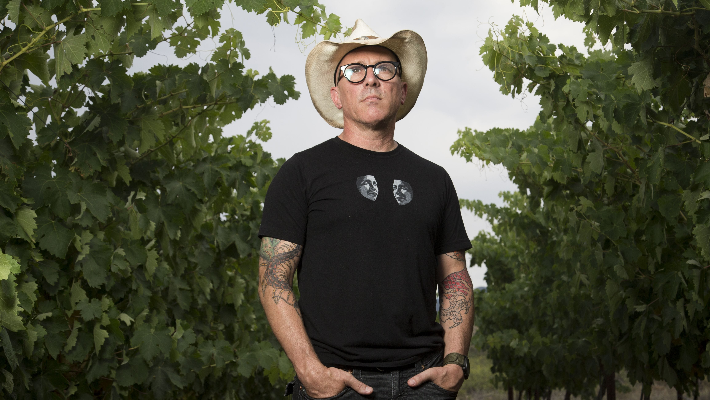
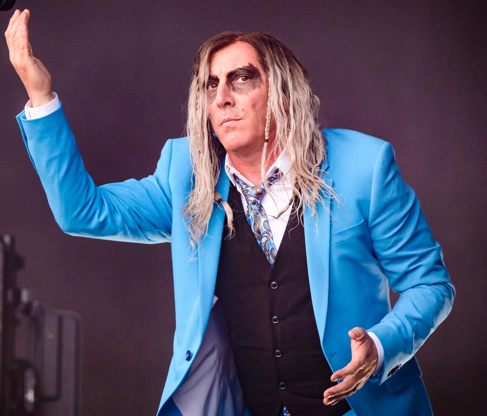
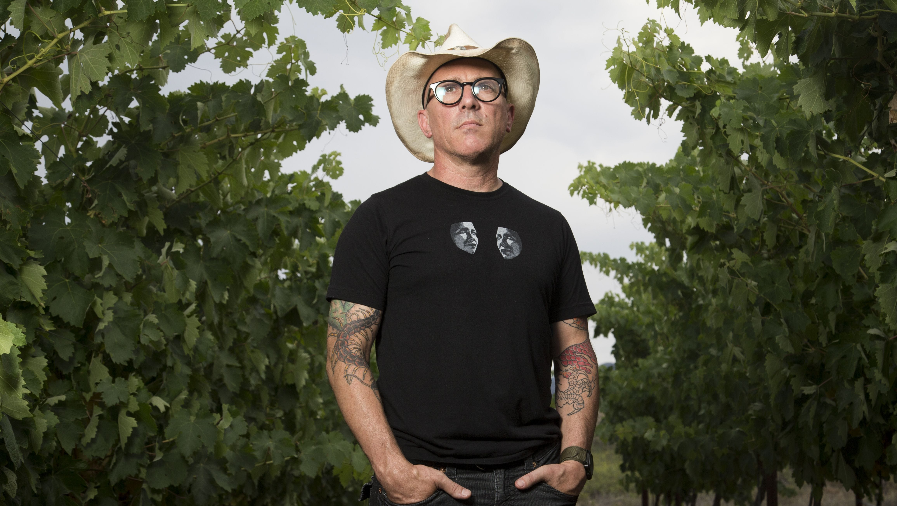
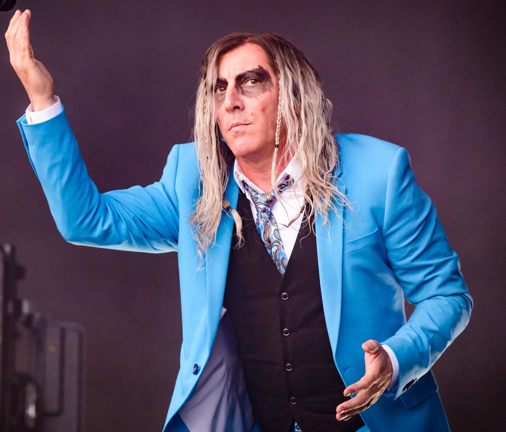

About
Maynard James Keenan
American singer, songwriter, musician, record producer, actor, martial artist, and winemaker.
Maynard James Keenan was born James Herbert Keenan in Ravenna, Ohio, on April 17, 1964, the only child of Southern Baptists Judith Marie (née Dougherty; November 22, 1943 – June 18, 2003) and Michael Loren Keenan. He is of Irish and Italian descent. When his parents divorced in 1968, his father moved to Scottville, Michigan, and Keenan would only see him about once a year for the next 12 years. His mother remarried, bringing Keenan into an "intolerant and unworldly household" where his intelligence and creative expression would be stifled. His mother suffered a paralyzing cerebral aneurysm in 1976 when Keenan was 11, and this incident would later serve as the inspiration for songs such as Tool's "Jimmy" and "Wings for Marie" and A Perfect Circle's "Judith". A few years later, she persuaded Keenan to live with his father in Scottville, which he considers "the best move [he] ever made". In 1982, he graduated from Mason County Central High School in Scottville, where he was a member of the wrestling team. His father was one of the coaches for the team and left coaching at the same time Keenan graduated in 1982.
Inspired by Bill Murray's performance in the 1981 comedy film Stripes, Keenan joined the United States Army, with the intention of having the G.I. Bill fund his dream of attending art school.[8] By this point, he had lived in Kansas, Michigan, New Jersey, New York, Ohio, Oklahoma, and Texas. He initially served in the Army as a forward observer before studying at West Point Prep School from 1983 to 1984.
In addition to completing a rigorous math and English curriculum, Keenan wrestled, ran on the cross country team, and sang in the glee club. It was during his time in the military that he adopted the sobriquet "Maynard" on a whim, based on a fictional character he had created in high school. He was distinguished in basic and advanced training, but declined an appointment to West Point and instead chose to pursue a music career because of his disillusionment with his colleagues' values and because he knew West Point would not tolerate his dissidence.
Upon completing his term of prep school, Keenan studied art at Kendall College of Art and Design in Grand Rapids, Michigan. From there he moved to Somerville, Massachusetts, where his love of animals led him to practice interior design for a Boston-area pet store. He was transferred to a store in Los Angeles, before he was quickly fired and began working in set construction. During the 1980s, Keenan played bass guitar for TexA.N.S. and sang for Children of the Anachronistic Dynasty, both independent bands. During this time, he wrote an early version of "Sober", later Tool's first successful single. He also (with future Tool bandmate Danny Carey) performed live and recorded with Green Jellö between 1990 and 1993, playing guitar and performing backup vocals as the voice of one of the pigs on the band's hit song "Three Little Pigs" on their debut album Cereal Killer, and appearing in the music video for "Slave Boy" on the band's follow-up LP 333. Around this time he also struck up a friendship with Tom Morello, who has credited Keenan with introducing him to Drop D tuning. Keenan spent time jamming with Morello and Brad Wilk, as did Zack de la Rocha: Morello and Wilk considered Keenan and de la Rocha as candidates for the vocalist with what would become Rage Against the Machine before deciding to ask the latter.
 


